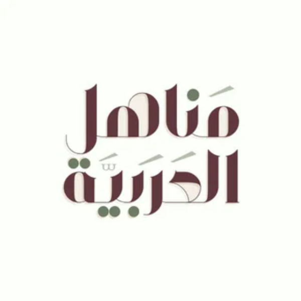

عن البرنامج
برنامج يختص بالتحصيل المُرَكّز في علوم العربية والأدب بعِدّةِ مواسم متنوعة.
الموسم الأول: مناهل العربية

مناهل العربية
الموسم الأول من مثاقفة
موسم ثقافي ندور فيه في فلك اللغة العربية، نتبين فضلها ومحاسنها وخصائصها وتأثيرها ومنزلتها بين اللغات، مجيبين بهذا عن سؤال «لماذا العربية؟»، ونعرِّج خلال هذه الرحلة على بعض ما عانته وتعانيه اللغة العربية من عدوان ومشكلات، متبصرين بذلك مستقبل اللغة العربية ومركزيتها بالنسبة لنا ودورنا في العناية بها.
أهداف الموسم
- إدراك مكانة اللغة العربية وأهميتها وفضلها ومحاسنها.
- معرفة أثر اللغة العربية على أهلها وعلى اللغات والشعوب الأخرى.
- تسليط الضوء على ما يحاك بالعربية من عدوان والإشكالات التي تواجهها وتعيق تقدمها في عصرنا الحالي.
مميزات الموسم
مناهل العربية بالأرقام
أرقام الموسم الأول كما وردت في تقرير «مدارج الأدب: مسيرة عامين» (1443–1444هـ).
الموسم الثاني: مرافئ البيان
مرافئ البيان
رحلة قرائية نستكشف فيها روائع النثر العربي الحديث
موسم أدبي نُبحر من خلاله في فنون النثر العربي، ننهل من مقالاته، ونستوقف رسائله، ونعرِّج على قصصه ورواياته، ونُصغي لنبض الراحلين في سيرهم ورحلاتهم وخواطرهم، مطوفين في كل ذلك على ذخائر أئمة البيان في العصر الحديث.
موسم أدبي نمر فيه عبر سلسلة من اللقاءات والمقروءات المختارة على مختلف أنواع النثر العربي التي شكلت معالم النثر العربي الحديث، بداية من المقالات إلى الروايات مرورًا بالمقامات والقصص القصيرة والرسائل والخواطر والتراجم والسير الذاتية وغيرها من الأشكال الأدبية.
أهداف مرافئ البيان
- التعرف على أشهر فنون النثر العربي وخصائصه وأبرز ما كُتب فيه.
- تعزيز العلاقة باللغة العربية وترسيخ قيمة الأدب العربي.
- تسليط الضوء على أبرز الأدباء في العصر الحديث.
- إثراء المعرفة الأدبية من خلال نقاشات وقراءات جماعية.
- تنمية الذائقة الأدبية عبر قراءة مختارات نثرية متميزة.
مميزات مرافئ البيان
أُقيم هذا الموسم بالتعاون مع شركة تكامل التنموية